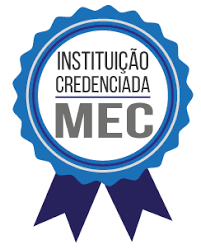

A Escola Tomorrowland foi fundada por nosso incrível fundador Gabriel Kenji Poli Ozaki, com o ideal de criarmos mentes brilhantes, capazes de deixarmos uma história de evolução em nosso universo ou possivelmente quem sabe, descobrirmos novos universos...
Nossa metodologia de ensino é direcionar mentes brilhantes e transformar pessoas em possíveis revolucionários da ciência, assim como os admiráveis Albert Einstein, Marie Curie, Charles Darwin, Stephen Hawking, Max Planck, Isaac Newton, Thomas Edison Louis Pasteur, Werner Heisenberg, Nikola Tesla, Daniel Gabriel Fahrenheit, Galileu Galilei, dentre muitos outros revolucionários que possamos citar aqui, quem sabe num futuro próximo seja seu nome em destaque!?
Lembre-se o ideal da Escola Tomorrowland é passar as descobertas e conhecimentos para você! Mas tenha em consideração a terceira lei de Newton “toda ação corresponde a uma reação”, dizemos isso pois cabe a você estudante querer absorver cada informação e ensinamento passados em nossa instituição e usa-las da melhorar maneira em suas futuras experiencias!
A Escola Tomorrowland corresponde com apenas seis cursos de ensino, sendo uma delas, uma unidade complementar extra! Cada curso corresponde a avaliação do instrutor responsável pelo curso!
Matemática:
“Matemática é considerado a base de tudo, e se pudéssemos calcular o impossível? E assim resolver algo em todos achavam que era insolucionavel? Inspirador não? Mas para inspirar primeiro precisamos estuda-las e soluciona-las. A matemática envolve muitas outras perguntas que ainda precisam de alguém para raciocina-las, desenvolve-las e soluciona-las.” ~ Profº Thomas Pitongoras
• Material a ser aplicado:
• Trigonometria na circunferência e funções trigonométricas.
• Formulas de transformação, relação e equações trigonométricas.
• Matemática Financeira.
• Introdução a estatísticas.
• Matrizes e determinantes.
• Sistemas lineares.
• Área de figuras planas.
• Analise combinatória.
• Probabilidade.
• Expressões matemáticas de alto calibre e importância.
Física:
“A Física permite-nos conhecer as leis gerais da Natureza que regulam o desenvolvimento dos processos que se verificam, tanto no Universo circundante como no Universo em geral. O objetivo da Física consiste em descobrir as leis gerais da Natureza e esclarecer, com base nelas, processos concretos. Os cientistas, à medida que se aproximavam desse objetivo, iam compreendendo melhor o panorama grandioso a complexo da unidade universal da Natureza. O Universo não é um conjunto simples de acontecimentos independentes, mas todos eles constituem manifestações evidentes do Universo considerado como um todo.” ~ Profº Arthur Newton
• Material a ser aplicado:
• Teoria para a temperatura e o calor.
• Efeitos da transferência de energia.
• Maquinas térmicas.
• Luz, visão e fenômenos luminosos.
• Refração da luz.
• Forças.
• Lei fundamental dos movimentos.
• Ação e reação, inercia e conservação da quantidade de movimento.
• Gravitação.
• Estática, estática dos fluidos.
• Energia.
• Trabalho e potência.
• Cinética vetorial e escalar.
• Eletrodinâmica: aparelhos e circuitos elétricos.
• Campo elétrico, tensão e modelo de corrente elétrica.
• Magnetismo e eletricidade.
• Tópicos da Física Moderna.
Química:
“A importância dos estudos na Química? Bom a química está em nosso cotidiano e assim por dizer que a Química é a ciência central, onde estudamos todas as propriedades, características e mudanças físicas e químicas da matéria, podemos analisar todos as estatísticas e porcentagens dos efeitos aplicados, na qual esses dados afetam todas as outras ciências naturais. Em um universo onde conhecimento também é poder, usar o potencial dos conhecimentos da química lhe trará bons domínios nas demais áreas da ciência.” ~ Profº Georgio de Lavoisier
• Material a ser aplicado:
• Teoria cinética dos gases.
• Equação geral dos gases.
• Misturas gasosas.
• Cálculo estequiométrico.
• Mistura de soluções.
• Reações exotérmicas e endotérmicas.
• Cálculos da variação de entalpia.
• Cinética química.
• Equilíbrio dinâmico e seu deslocamento.
• Equilíbrio iônicos.
• Produto iônico da água e Kps.
• Eletrólise com eletrodos inertes.
• Eletrólise com eletrodos ativos.
• Experimentos com elementos químicos ao todo.
Inglês:
“Acredito que inglês seja essencial para o crescimento mental, profissional e evolutivo do aluno, pois consiste em uma linguagem quase mesmo universal e grandes fontes de pesquisa veem da linguagem inglesa, para as futuras grandes mentes a se tornarem aqui, quanto mais línguas aprendermos mais fonte de poder de conhecimento adquirimos! ” ~ Profº TanTan do Klan
• Material a ser aplicado:
• Fluência em inglês: aprenda a perguntar, afirmar e negar qualquer frase em todos os tempos verbais.
• Aprenda a utilizar os 7 códigos que determinam os tempos: Do, Does, Did, Will, Would, Have e Has.
• Aprenda a utilizar os 7 códigos que determinam os tempos: Do, Does, Did, Will, Would, Have e Has.
• Entenda o correto sentido do Gonna / Going To (Código do Futuro 100%).
• Entenda como o Can (verbo Poder) e o Shall (verbo Dever) são os dois verbos mais fáceis de toda a língua inglesa.
• Aprenda +5.000 palavras em aulas e PDFs: Wh-Questions, Verbos, Pronomes, Adjetivos, Substantivos, entre muito mais vocabulários.
Português:
“Igualmente como o professor de inglês TanTan disse, acredito também que o aprender e a fluência de qualquer linguagem seja essencial para o aprimoramento mental, profissional e evolutivo do aluno, principalmente para montagens de relatórios e leituras de artigos científicos. A fluência das linguagens é onde repassamos todos os conhecimentos que adquirimos, onde até mesmo um erro de virgula pode interferir no conhecimento que queremos repassar.” ~ Profº Miguel dos Anjos
• Material a ser aplicado:
• História literária da idade média.
• Concordância nominal e verbal.
• Principais autores literários.
• O Modernismo e Pós Modernismo.
• Morfologia, sintase, semântica, preposição.
• Regência, pronomes oblíquos.
• Gramatica ao todo.
História:
“Mesmo sendo uma disciplina complementar trato esta disciplina como uma fundamental aos estudos, pois se não fosse os retratos históricos, muitos dos conhecimentos que adquirimos para a sociedade ao todo não seriam lembrados! E assim nunca teríamos descoberto o fogo, a luz, o mal de uma guerra, até mesmo os avanços que ambas as guerras propuseram a nossa comunidade, mesmo tendo muitas infelizes tragédias para esses avanços acontecerem...” ~ Profº Roberto Drusman
• Material a ser aplicado:
• A colonização da américa espanhola.
• A colonização da américa inglesa e francesa.
• Organização político-administrativa na América portuguesa.
• O iluminismo.
• Das revoluções Inglesas a Revolução Industrial.
• A Revolução Francesa e o Império Napoleônico.
• As lutas de independência na América.
• O movimento operário e o adverso do socialismo.
• As revoluções liberais e o nacionalismo.
• O governo de D. Pedro I e o período regencial.
• O governo de D. Pedro II.
• Guerras Mundiais e demais conflitos.
Sobre o termino dos cursos e certificado:
Ao terminar seus estudos e aprimorar seu conhecimento, você recebera um recebera um certificado de graduação em nossa instituição.

Lembrando que nossa instituição é aprovada e credenciada pelo MEC (Ministério da Educação).